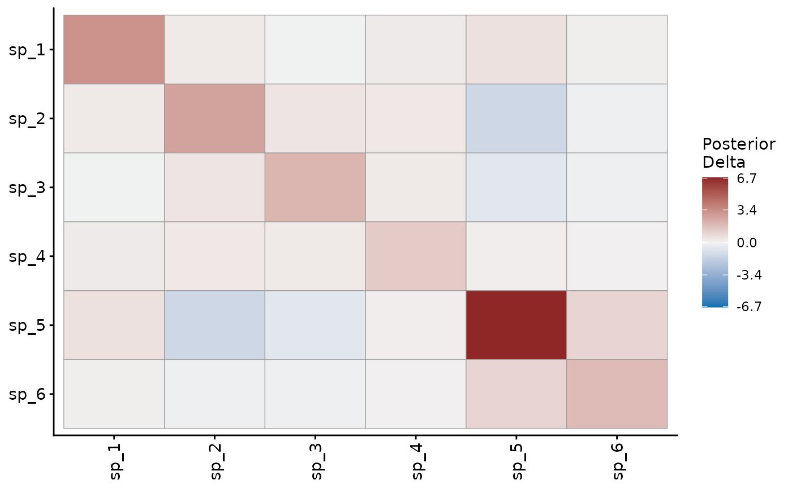

Posterior summary of the factor-implied shared variation matrix
Source:R/shared_variation.R
shared_variation.RdFor a latent-factor mvgam fit, returns the posterior of the shared
variation matrix \(\Delta = Z \Sigma Z^\top\). Z is the
n_series x n_lv loadings matrix and \(\Sigma\) is the covariance
of the latent states. Delta is the covariance the factors induce
between the series' trends. Its diagonal gives the variance of each
series that the factors capture. Its off-diagonal entries give the
covariance between pairs of series.
Usage
shared_variation(object, ...)
# S3 method for class 'mvgam'
shared_variation(object, probs = c(0.025, 0.975), robust = FALSE, ...)Arguments
- object
A fitted
mvgamobject whose trend model includes latent factors (n_lv < n_series).- ...
Unused. Anything passed here is refused.
- probs
Two probabilities for the lower and upper bounds of the credible interval. Default
c(0.025, 0.975), a 95% interval.- robust
Logical. If
FALSE(the default), uses mean and standard deviation for summaries. IfTRUE, uses median and median absolute deviation (MAD).
Value
An object of class mvgam_shared_variation, a list
with:
delta: posterior point estimate of then_series x n_seriesshared variation matrix.delta_se: posterior spread per entry.delta_lower,delta_upper: per-entry credible bounds atprobs.delta_ess: per-entry effective sample size, fromposterior::ess_basic().n_series,series_names,n_lv: model dimensions and series labels.probs,robust: the summary settings.
Details
A factor column enters the trend as sigma_trend[k] * Z[, k]. Z Z'
alone would weight every column equally, while the model scales each
column by its latent standard deviation. Under multiplicative gamma
process shrinkage those scales hold the whole of the shrinkage. For
an autoregressive trend \(\Sigma\) is the stationary covariance of
the latent states, as in residual_cor().
Delta is invariant to rotation. An orthogonal Z* = Z Q with
Sigma* = Q' Sigma Q leaves Z* Sigma* Z*' unchanged. The summary
takes the same value for the sampled Z and for the QR-identified
Z_tilde of Heaps and Jermyn (2024). It uses the sampled Z, the
basis \(\Sigma\) is stated in. A trend_map without NA entries
fixes Z. The posterior spread of Delta then comes from
\(\Sigma\) alone.
Relation to loadings_prior
Under the matrix-normal prior Z | Phi, Psi ~ MN(0, Phi, Psi), the
prior expectation of Z Z' is tr(Psi) Phi (Heaps and Jermyn 2024,
section 3). Phi sets the prior expectation of the coupling pattern
between series, while Z itself is identified only up to rotation.
A loadings_prior in mvgam() encodes domain knowledge about that
pattern through Phi.
Delta also carries the latent covariance. Its scale includes the
variance of the latent states. Compare its pattern with Phi.
References
Heaps, S. E. and Jermyn, I. H. (2024). Structured prior distributions for the covariance matrix in latent factor models. Statistics and Computing, 34:143. doi:10.1007/s11222-024-10454-0
See also
residual_cor() for the implied correlation matrix,
cov2cor(Delta). Under mvn() and mvt() it adds each series'
residual variance to the diagonal of Delta first. The
joint species distribution article
interprets both for a community of species.
Other latent dynamics:
active_factors(),
compare_loadings(),
fevd.mvgam(),
irf.mvgam(),
ordinate(),
posterior_transition_matrix(),
residual_cor(),
stability.mvgam()
Examples
# \dontrun{
# Detections of 6 species whose occupancy shares two latent factors
simdat <- sim_closure_unit_data(
family = occ(),
n_species = 6L,
n_sites = 80L,
n_visits = 4L,
n_lv = 2L,
seed = 1L
)
mod <- jsdgam(
formula = bf(y ~ series * env, p ~ series + tod_c),
factor_formula = ~ -1,
data = simdat$data_train,
family = occ(),
n_lv = 2L,
chains = 2,
silent = 2
)
#> Warning: 49 of 2000 (2.0%) transitions ended with a divergence.
#> See https://mc-stan.org/misc/warnings for details.
# The species-by-species covariance the two factors induce
sv <- shared_variation(mod)
sv
#> Factor-implied shared variation matrix (Delta = Z Sigma Z')
#> 6 series x 2 latent factors | point = posterior mean, spread = SD
#> Quantile bounds: [0.025, 0.975]
#>
#> Diagonal (captured variance per series):
#> Estimate Q2.5 Q97.5
#> sp_1 3.181 0.014 35.988
#> sp_2 2.668 0.037 20.761
#> sp_3 2.014 0.013 16.764
#> sp_4 1.267 0.015 7.893
#> sp_5 6.781 0.036 63.237
#> sp_6 1.807 0.017 9.492
#>
#> plot() draws the full matrix as a heatmap.
plot(sv)

# Next: residual_cor() rescales Delta to correlations
# }